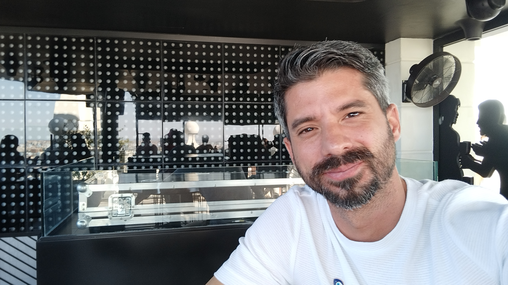

Alejandro Valdes Peña

Summary
Recepcionista hotelero con 5 años de experiencia en la rama turística de la hospitalidad, incluyendo roles en cadenas hoteleras
de renombre y con las compañías de cruceros MSC Cruises y Miray Cruises. Trabajador incansable por encontrar soluciones en el ámbito
laboral para lograr la satisfacción de los clientes a través de habilidades de trabajo en equipo y colaboración. Especializado en
proporcionar un servicio de atención al cliente excepcional, gestionar operaciones de recepción eficientemente y mejorar la experiencia
del huésped. Con sólidas habilidades lingüísticas y conocimientos de sistema de gestión hotelera. Preparado para enfrentar desafíos en
entornos multiculturales y dinámicos, con interés en formarme e incrementar mis conocimientos, experiencias y habilidades.
Education
- Informatic Engineered - Informatic Science University of Habana / 2007-2012
Certifications
- International Maritime Competence Certificate - Maritime and Fishing Institute Andrés González Lines / 2015 - 2016
- International Cabin Service Certificate - Maritime and Fishing Institute Andrés González Lines / 2015 - 2016
Work Experience
-
Excursion Department - Reception
Miray International Cruises | March 2023-July 2023
Greece, Turkiye
-
Public Relation Agent
Blue Diamont Resorts | Hotel Memories | Agoust 2022-December 2023
La Havana, Cuba
-
Public Relation Agent
Iberostar | Hotel Iberostar Grand Packard | April 2022-Agoust 2023
La Havana, Cuba
-
Guest Service Agent
Msc Cruises | July 2016-March 2020
Italy, Spain, Greece, France, Malta, Brasil, Uruguay, Argentina
-
Cashier
Cafe Bar Bilongo | December 2015-July 2016
La Havana, Cuba
-
Web Developer
Informatic Science University | September 2012-September 2015
La Havana, Cuba
Skills
- Comunicación Asertiva
- Resolución de Problemas
- Servicio al Cliente Excepcional
- Gestión de Equipos
- Operaciones Organizativas
- Manejo de las Tecnologías de la Información
About Me